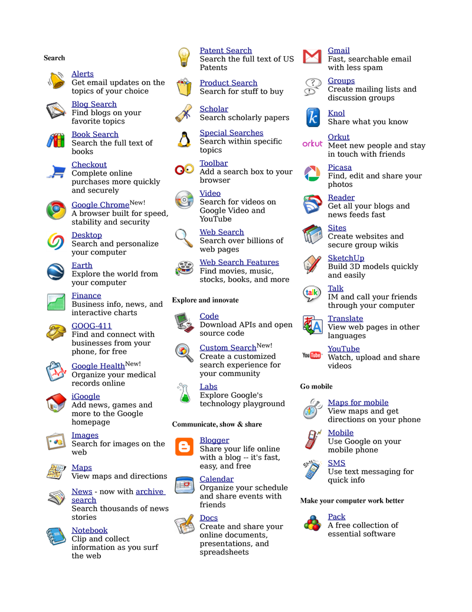
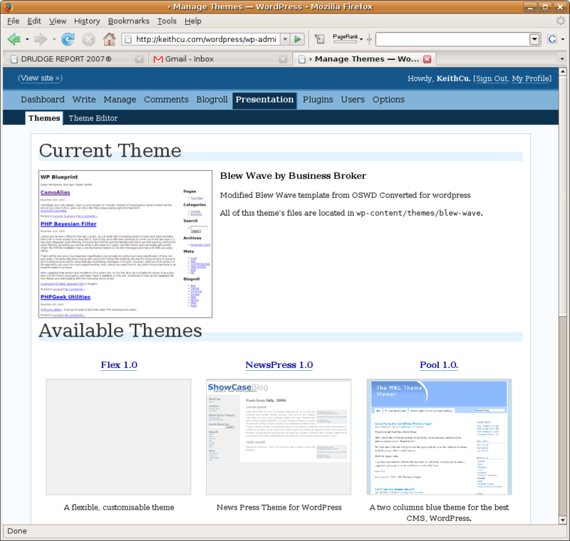

In 1950, Alan Turing proposed a thought experiment as a definition of AI in which a computer's responses (presumed to be textual) were so life-like that, after questioning, you could not tell whether they were made by a human or a computer. Right now the search experience is rather primitive, but eventually, your search engine's response will be able to pass the Turing Test. Instead of simply doing glorified keyword matching, you could ask it to do things like: “Plot the population and GDP of the United States from 1900 – 2000.”5 Today, if you see such a chart, you know a human did a lot of work to make it.
The creation of machines that can pass the Turing Test will make the challenge of outsourcing seem like small potatoes. Why outsource work to humans in other countries when computers nearby can do the task?
AI is a meaningless term in a sense because building a piece of software that will never lose at Tic-Tac-Toe is a version of AI, but it is a very primitive type of AI, entirely specified by a human and executed by a computer that is just following simple rules.
Fortunately, the same primitive logic that can play Tic-Tac-Toe can be used to build arbitrarily “smart” software, like chess computers and robot-driven cars. We simply need to build systems with enough intelligence to fake it. This is known as “Weak AI”, as opposed to “Strong AI”, which is what we think about when we imagine robots that can pass the Turing Test, compose music, get depressed.
In Strong AI, you wouldn't give this machine a software program to play chess, just the rules. The first application of Strong AI is Search; the pennies for web clicks will pay for the creation of intelligent computers.
The most important and interesting service on the Internet is search. Without an index, a database is useless — imagine a phone directory where the names were in random order. There is an enormous turf war taking place between Google, Yahoo!, and Microsoft for the search business. Google has 200,000 servers, which at 200 hits per second gives them the potential for three trillion transactions per day. Even at fractions of pennies per ad, the potential revenue is huge. Right now, Google has 65% of the search business, with Yahoo! at 20% and Microsoft at 7%. Bill Gates has said that Microsoft is working merely to keep Google “honest”, which reveals his acceptance that, unlike Windows and Office, MSN is not the leader. (Note that Microsoft's search and other online efforts have an inherent advantage because they get as much software as they want for free. Any other company which wanted to build services using Microsoft's software would have much higher costs.)
Furthermore, to supplant an incumbent, being 10% better is insufficient. It will take a major breakthrough by one of Google's competitors to change the game — Microsoft's Bing is not one of those. I use Google because I find its results good enough and because it keeps a search history, so that I can go back in time and retrieve past searches. If I started using a different search provider, I would lose this archive.
Google depends heavily on free software, but very little of their code is released to outsiders. One can use many of Google's services for free, as Google makes most of its money on advertising, but you cannot download any of their code to learn from it or improve it or re-use it in ways not envisioned by them. Probably 99% of the code on a typical server at Google is free software, but 99% of the code Google itself creates is not free software.6 Google's source code is not only not freely available, it is not for sale.
In fact, Google is an extremely secretive and opaque company. Even in casual conversation at conferences, its engineers quickly retreat to statements about how everything is confidential. Curiously, a paper explaining PageRank, written in 1998 by Google co-founders Sergey Brin and Larry Page, says, “With Google, we have a strong goal to push more development and understanding into the academic realm.” It seems they have since had a change of heart.
Google has sufficient momentum and sophistication to leave its competitors in the dust. Here is a list of Google's services:

Google is applying Metcalfe's law to the web: Gmail is a good product, but being a part of the Google brand is half of its reason for success.
Even with all that Google is doing, search is its most important business. Google has tweaked its patented PageRank algorithm extensively and privately since it was first introduced in 1998, but the core logic remains intact: The most popular web pages that match your search are the ones whose results are pushed to the top.7
Today, PageRank can only rank what it understands. If the database contains words, it ranks the words. PageRank lets the wisdom in millions of web sites decide what is the most popular, and therefore the best search result — because the computer cannot make that decision today. PageRank is an excellent stopgap measure to the problem of returning relevant information, but the focus should be on putting richer information into the database.
I believe software intelligence will get put into web spiders, those programs that crawl the Internet and process the pages. Right now, they mostly just save text, but eventually they will start to understand it, and build a database of knowledge, rather than a database of words. The rest is mostly a parsing issue. (Some early search engines, treated digits as words: searching for 1972 would find any reference to 1, 9, 7 or 2; this is clearly not a smart search algorithm.)
The spiders that understand the information, because they've put it there, also become the librarians who take the search string you give it, and compare that to its knowledge.8 You need a librarian to build a library, and a librarian needs the library she built to help you.
Today, web spiders are not getting a lot of attention in the search industry. Wikipedia documents 37 web crawlers, and it appears that the major focus for them is on performance and discovering spam websites containing only links which are used to distort rank.9
The case for why a free search engine is better is a difficult one to make, so I will start with a simpler example, Google's blogging software.
While Google has 65% of the billion-dollar search business, it has 10% or less of the blog business. There exists an enormous number of blog sites, the code for which is basically all the same. The technology involved in running Instapundit.com, one of the most influential current-events blogs, is little different than that running Myspace, the most popular diary and chatboard for Jay-Z-listening teenage girls.
Google purchased the proprietary blogging engine Blogger in 2000 for an undisclosed amount. Google doesn't release how many users they have because they consider that knowledge proprietary, but we do know that no community of hundreds of third party developers is working to extend Blogger to make it better and more useful.
The most popular free blogging engine is WordPress, a core of only 40,000 lines of code. It has no formal organization behind it, yet we find that just like Wikipedia and the Linux kernel, WordPress is reliable, rich, and polished:

WordPress, the most popular free blogging engine
WordPress is supported by a community of developers, who have created plug-ins, written and translated documentation, and designed many themes to customize the look. Here are the categories of plug-ins available for WordPress:
| Administration Administration Tools Advertisement Anti-Spam Comments Meta (tagging) Restrictions Statistics Syntax Highlighting Syndication Translation and Languages Tweaking Monetizing Archive Calendar - Event Navigation Randomness Styles Widgets Links 3rd-parties services | Graphics, Video, and Sound Audio Images Multimedia Video Odds and Ends Financial Forums Geo Miscellaneous Mood Time Weather Outside Information Del.icio.us Technorati Posts Audio Posts Editing Posts Formatting Posts Miscellaneous Post Plugins |
There are hundreds of add-ons for WordPress that demonstrate the health of the developer community and which make it suitable for building even very complicated websites. This might look like a boring set of components, but if you broke apart MySpace or CNN's website, you would find much of the same functionality.
Google acquired only six people when it purchased Pyra Labs, the original creators of Blogger, a number dwarfed by WordPress's hundreds of contributors. As with any thriving ecosystem, the success of WordPress traces back to many different people tweaking, extending and improving shared code. Like everything else in the free software community, it is being built seemingly by accident.10
In addition to blogging software, I see other examples where Google could have worked more closely with the free software community. Recently I received many e-mails whose first words were: “Your cr. rating doesn't matter” that I dutifully marked as spam. It took weeks before Gmail's spam filter caught on. Spam is a very hard problem and cooperating with others could help improve Google faster, and lower their R&D costs.
Why Google should have built Blogger as free software is an easier case to make because it isn't strategic to Google's business or profits, the search engine is a different question. Should Google have freed their search engine? I think a related, and more important question is this: Will it take the resources of the global software community to solve Strong AI and build intelligent search engines that pass the Turing Test?
Because search is an entire software platform, the best way to look at it is by examining its individual components. One of the most fundamental responsibilities for the Google web farm is to provide a distributed file system. The file system which manages the data blocks on one hard drive doesn't know how to scale across machines to something the size of Google's data. In fact, in the early days of Google, this was likely one of its biggest engineering efforts. There are (today) a number of free distributed file systems, but Google is not working with the free software community on this problem. One cannot imagine that a proprietary file system would provide Google any meaningful competitive advantage, nevertheless they have built one.
Another nontrivial task for a search engine is the parsing of PDFs, DOCs, and various other types of files in order to pull out the text to index them. It appears that this is also proprietary code that Google has written.
It is a lot easier to create a Google-scaled datacenter with all of its functionality using free software today than it was when Google was formed in 1998. Not only is Google not working with the free software community on the software they have created, they are actually the burdened first-movers. What you likely find running on a Google server is a base of Linux and other free software, upon which Google has created their custom, proprietary code. Google might think their proprietary software gives them an advantage, but it is mostly sucking up resources, and preventing them from leveraging advancements from outside developers.
And like Microsoft's Windows NT kernel, even if Google were to release their infrastructure code, much of it would not be picked up because the free software community has developed their own solutions. In fact, in late 2006, Google began to release tiny bits and pieces of their most boring software, but when I looked at the codebases, there didn't appear to be much contributions from the outside — because it isn't nearly as interesting to the world as it would have been ten years earlier. Furthermore, as these codebases have lived inside Google for a long time they probably have lots of dependencies on other Google technologies which make it hard for it isolated and used in the outside world.
What about the core of Google's business, the code that takes your search request and attempts to make sense of it so that it can pass the Turing Test? Google has not even begun to solve this problem, and even many simpler problems, so it makes one wonder if it is something a single company can solve by itself.
There are two kinds of engineering challenges for Google:
Those necessary, non-strategic, and at best loosely correlated to their profits, like blogging, language translation, and spam detection, none of which Google is cooperating with the community on.
Then there is the daunting problem of building software with Strong AI which Google had better be working on with the rest of the world. The idea of Google “owning” Strong AI is at least as scary as Microsoft owning Windows and Office. Google has publicly stated that Microsoft's proprietary software model has been bad for the industry, but doesn't recognize that it is trying to do the exact same thing!
Google is one of the few new, large, and fast-growing software businesses in America and few people are publicly arguing that the company give away the farm by sharing their core technology with the free software community. This is especially scary because it is an irreversible step. However, software is not a datacenter or a relationship with customers and advertisers. Most of the users of Google's code would not be in competition with Google, but would be taking it to new places that they hadn't considered. Furthermore, Google would still have a significant first-mover advantage of the code they created.
In addition, if someone else eventually creates a free search engine that a worldwide community of researchers coalesce around, where will Google be then? Perhaps Microsoft could flank Google by building a free search engine that scientists and researchers around the world could tinker in. There is an interesting free codebase called Lucene, run by the Apache foundation, which is steadily gaining use in Enterprises who want to run their own search engine. It seems quite possible that this is the codebase and community that will provide a threat to Google in five to ten years.